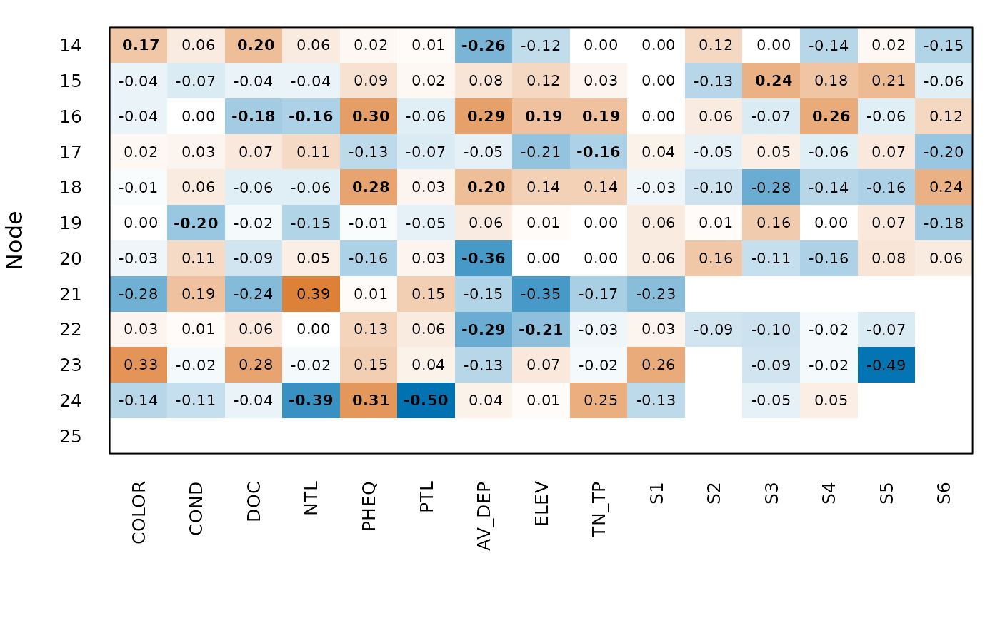

Draws a table of nodes by variables with the semipartial correlations of node_test(),
as in Table S1 of Leibold et al. (2010). Bold values with an asterisk remain significant
after the false discovery rate, as in plot_node_test(); other bold values are
significant only as isolated tests. Blank cells could not be calculated.
Arguments
- x
Result of
node_test().- test
Permutation test to show:
"max"for the larger p-value of sites and species,"site"for sites alone, or"joint"for the permutation of the article. Seenode_test()for what each one tests.- level
Significance level.
- colours
Colours of negative and positive values.
- text_size
Size of the text, in mm (as in
ggplot2::geom_text()).- alpha
Deprecated, use
level.- col, cex, ...
Deprecated:
colis nowcoloursandcexistext_size; arguments ofgraphics::image()are no longer used.
Value
A ggplot object, with the matrix of semipartial correlations (predictors followed
by biogeographic events) in the attribute values.
Details
Rows are the node numbers of the tree, as in tree$edge; ape::nodelabels() on a plot of
ape::plot.phylo() shows where they are.
References
Leibold, M. A., Economo, E. P., & Peres-Neto, P. (2010). Metacommunity phylogenetics: separating the roles of environmental filters and historical biogeography. Ecology Letters, 13, 1290–1299. doi:10.1111/j.1461-0248.2010.01523.x
See also
Other clades and biogeography:
biogeography_matrix(),
node_contrasts(),
node_test(),
plot_node_test()
Examples
nodes <- node_contrasts(daphniids$tree)
set.seed(1)
out <- node_test(daphniids$comm, nodes, daphniids$env, daphniids$biogeography,
n_perm = 49)
plot_node_heatmap(out, test = "site")
